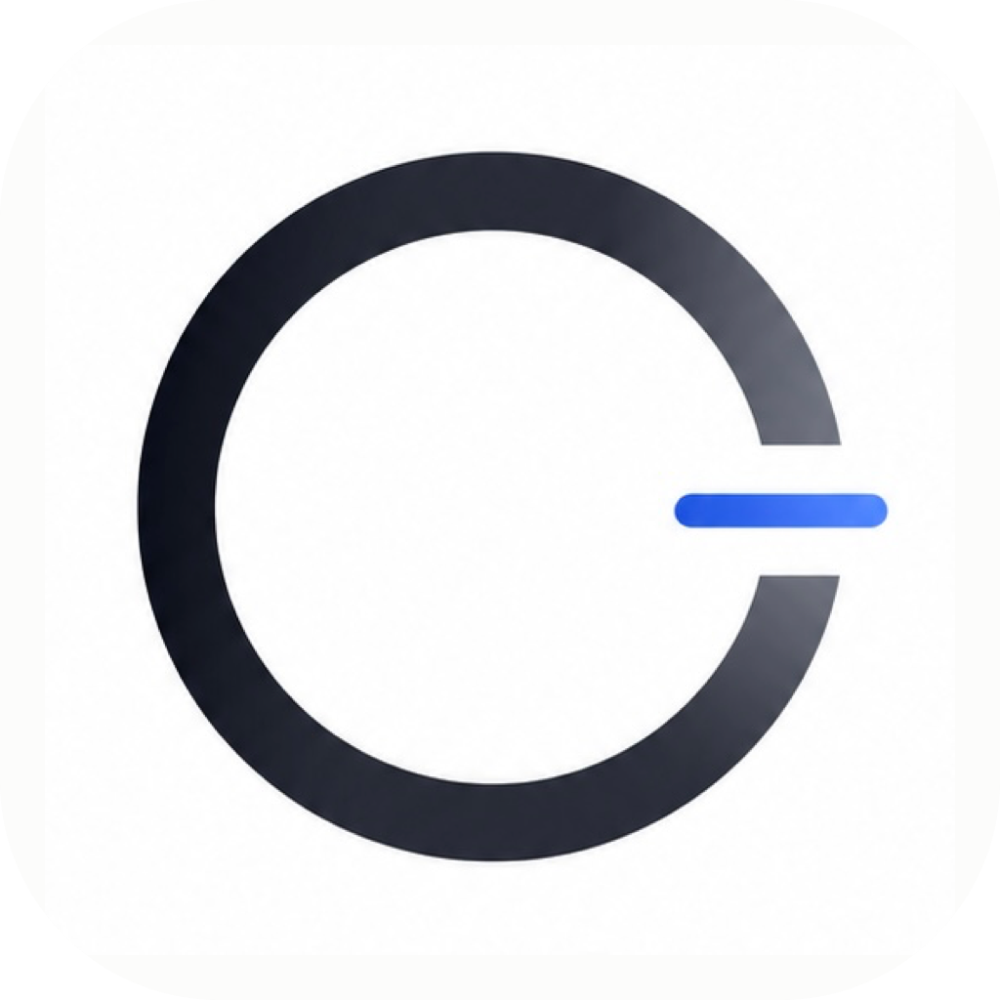

<!DOCTYPE html>
<html lang="zh-CN">
<head>
  <meta charset="UTF-8" />
  <title>OpenLess — 重设计</title>
  <link rel="stylesheet" href="tokens.css" />
  <link rel="icon" href="AppIcon.png" />
  <style>
    html, body { height: 100%; margin: 0; }
    body { background: #f0eee9; }
    #app { min-height: 100vh; }
  </style>
  <script src="https://unpkg.com/react@18.3.1/umd/react.development.js" integrity="sha384-hD6/rw4ppMLGNu3tX5cjIb+uRZ7UkRJ6BPkLpg4hAu/6onKUg4lLsHAs9EBPT82L" crossorigin="anonymous"></script>
  <script src="https://unpkg.com/react-dom@18.3.1/umd/react-dom.development.js" integrity="sha384-u6aeetuaXnQ38mYT8rp6sbXaQe3NL9t+IBXmnYxwkUI2Hw4bsp2Wvmx4yRQF1uAm" crossorigin="anonymous"></script>
  <script src="https://unpkg.com/@babel/standalone@7.29.0/babel.min.js" integrity="sha384-m08KidiNqLdpJqLq95G/LEi8Qvjl/xUYll3QILypMoQ65QorJ9Lvtp2RXYGBFj1y" crossorigin="anonymous"></script>
  <script src="data.js"></script>
</head>
<body>
  <div id="app"></div>

  <script type="text/babel" src="icons.jsx"></script>
  <script type="text/babel" src="chrome.jsx"></script>
  <script type="text/babel" src="capsule.jsx"></script>
  <script type="text/babel" src="pages.jsx"></script>
  <script type="text/babel" src="variants.jsx"></script>
  <script type="text/babel" src="design-canvas.jsx"></script>
  <script type="text/babel" src="tweaks-panel.jsx"></script>

  <script type="text/babel">
    const { useState, useEffect } = React;

    const TWEAK_DEFAULTS = /*EDITMODE-BEGIN*/{
      "glassBlur": 22,
      "fontScale": 100
    }/*EDITMODE-END*/;

    function App() {
      const [t, setTweak] = useTweaks(TWEAK_DEFAULTS);

      useEffect(() => {
        document.documentElement.style.setProperty('--ol-glass-blur', `${t.glassBlur}px`);
        document.documentElement.style.fontSize = `${(t.fontScale / 100) * 16}px`;
      }, [t.glassBlur, t.fontScale]);

      const buildShell = (os, label, w = 1240, h = 800) => (
        <DCArtboard id={label.toLowerCase().replace(/[^a-z0-9]+/g, '-')} label={label} width={w} height={h}>
          <WindowChrome os={os} title="OpenLess" height={h}>
            <FloatingShell os={os} />
          </WindowChrome>
        </DCArtboard>
      );

      const buildPage = (os, tab, label, w = 1240, h = 800) => (
        <DCArtboard
          id={`${tab}-${os}`}
          label={label}
          width={w}
          height={h}
        >
          <WindowChrome os={os} title="OpenLess" height={h}>
            <FloatingShell os={os} initialTab={tab} />
          </WindowChrome>
        </DCArtboard>
      );

      return (
        <DesignCanvas>
          <DCSection
            id="intro"
            title="OpenLess · v1.0 重设计"
            subtitle="磨砂外框 + 凸起控制台 · 设置改为模态弹窗 · 录音仅通过快捷键触发 · Mac / Win 同一套主体，仅顶栏不同"
          >
            <DCArtboard id="brief" label="设计说明" width={520} height={800}>
              <Brief />
            </DCArtboard>
            <DCArtboard id="ia" label="信息架构" width={520} height={800}>
              <IADiagram />
            </DCArtboard>
          </DCSection>

          <DCSection
            id="overview"
            title="概览 · Overview"
            subtitle="Provider 状态 + 今日数据 + 最近识别 · 默认进入页"
          >
            {buildPage('mac', 'overview', '概览 · macOS')}
            {buildPage('win', 'overview', '概览 · Windows')}
          </DCSection>

          <DCSection
            id="history-page"
            title="历史 · History"
            subtitle="左侧时间线 · 右侧原文与润色对比 · 全部本地存储"
          >
            {buildPage('mac', 'history', '历史 · macOS')}
            {buildPage('win', 'history', '历史 · Windows')}
          </DCSection>

          <DCSection
            id="vocab-page"
            title="词汇表 · Vocabulary"
            subtitle="ASR 热词 + LLM 上下文，命中计数"
          >
            {buildPage('mac', 'vocab', '词汇表 · macOS')}
            {buildPage('win', 'vocab', '词汇表 · Windows')}
          </DCSection>

          <DCSection
            id="style-page"
            title="风格 · Style"
            subtitle="4 种润色预设，可启停"
          >
            {buildPage('mac', 'style', '风格 · macOS')}
            {buildPage('win', 'style', '风格 · Windows')}
          </DCSection>

          <DCSection
            id="settings-modal"
            title="设置 · 模态弹窗"
            subtitle="设置不再占据侧边栏，从底栏齿轮唤起，居中弹窗，左侧为账户 / 设置 / 个性化 / 关于 + 帮助中心 / 版本说明"
          >
            <DCArtboard id="settings-mac" label="设置弹窗 · macOS" width={1240} height={800}>
              <WindowChrome os="mac" title="OpenLess" height={800}>
                <FloatingShell os="mac" initialSettings={true} />
              </WindowChrome>
            </DCArtboard>
            <DCArtboard id="settings-win" label="设置弹窗 · Windows" width={1240} height={800}>
              <WindowChrome os="win" title="OpenLess" height={800}>
                <FloatingShell os="win" initialSettings={true} />
              </WindowChrome>
            </DCArtboard>
          </DCSection>

          <DCSection
            id="capsule"
            title="录音胶囊 · Dynamic Island 尺寸"
            subtitle="约 220×38px · 顶部居中浮现 · [×] think [×] · 转写时灰条 L→R + think 文字闪光"
          >
            <DCArtboard id="capsule-recording" label="录制中" width={520} height={360}>
              <CapsuleScene os="mac" mode="recording" />
            </DCArtboard>
            <DCArtboard id="capsule-transcribing" label="转写中" width={520} height={360}>
              <CapsuleScene os="mac" mode="transcribing" />
            </DCArtboard>
            <DCArtboard id="capsule-done" label="完成" width={520} height={360}>
              <CapsuleScene os="mac" mode="done" />
            </DCArtboard>
            <DCArtboard id="capsule-states" label="状态对照" width={520} height={360}>
              <CapsuleStates />
            </DCArtboard>
          </DCSection>

          <TweaksPanel>
            <TweakSection label="毛玻璃" />
            <TweakSlider
              label="模糊强度"
              value={t.glassBlur}
              min={0} max={48} step={2} unit="px"
              onChange={(v) => setTweak('glassBlur', v)}
            />
            <TweakSection label="字体" />
            <TweakSlider
              label="缩放"
              value={t.fontScale}
              min={85} max={130} step={5} unit="%"
              onChange={(v) => setTweak('fontScale', v)}
            />
          </TweaksPanel>
        </DesignCanvas>
      );
    }

    // ─── Brief ─────────────────────────────────────────────────────────
    function Brief() {
      return (
        <div style={{ padding: 32, height: '100%', background: '#fff', overflow: 'auto', fontFamily: 'var(--ol-font-sans)' }}>
          <div style={{ display: 'flex', alignItems: 'center', gap: 12, marginBottom: 22 }}>
            
            <div>
              <div style={{ fontSize: 18, fontWeight: 600, letterSpacing: '-0.01em' }}>OpenLess</div>
              <div style={{ fontSize: 12, color: 'var(--ol-ink-4)' }}>v0.6 → v1.0 · 跨平台桌面版</div>
            </div>
          </div>

          <Section title="本次改动">
            <Bullet><b>悬浮侧边栏</b> — 脱离边缘 14px，毛玻璃材质</Bullet>
            <Bullet>移除「开始录音」按钮 — 录音 <b>仅通过右 Option</b> 全局快捷键触发</Bullet>
            <Bullet>历史页升级为<b>双栏工作区</b>（时间线 + 原文/润色对比）</Bullet>
            <Bullet>7 tab → 5 tab：配置 + 设置 + 帮助 → 单一「设置」</Bullet>
            <Bullet>录音胶囊 Mac & Win 统一为 <b>深色 pill</b></Bullet>
          </Section>

          <Section title="视觉语言">
            <Swatch c="#ffffff" name="背景 / 卡片" sub="#FFFFFF" border />
            <Swatch c="#0a0a0b" name="主色 / 文字" sub="#0A0A0B" />
            <Swatch c="#2563eb" name="点缀 / 当前态" sub="#2563EB" />
            <Swatch c="rgba(255,255,255,0.62)" name="毛玻璃面板" sub="blur 22 / sat 170%" border />
          </Section>

          <Section title="字体">
            <div style={{ fontFamily: "'Inter','PingFang SC',sans-serif", fontWeight: 600, fontSize: 22, letterSpacing: '-0.02em' }}>
              Inter / 苹方 SC
            </div>
            <div style={{ fontSize: 11, color: 'var(--ol-ink-4)', marginTop: 2 }}>Display 600 · Body 500 · Mono = JetBrains Mono</div>
          </Section>

          <Section title="跨平台策略">
            <Bullet>主体 100% 共用：导航、内容、状态、动画、胶囊均一致</Bullet>
            <Bullet>仅<b>窗口顶栏</b>分平台：mac 红黄绿 · win Mica 三键</Bullet>
            <Bullet>快捷键提示统一为「右 Option」（Win 端可在设置改成 Right Alt）</Bullet>
          </Section>
        </div>
      );
    }

    function Section({ title, children }) {
      return (
        <div style={{ marginBottom: 22 }}>
          <div style={{ fontSize: 10.5, fontWeight: 600, letterSpacing: '.08em', textTransform: 'uppercase', color: 'var(--ol-ink-4)', marginBottom: 10 }}>{title}</div>
          <div style={{ display: 'flex', flexDirection: 'column', gap: 6 }}>{children}</div>
        </div>
      );
    }
    function Bullet({ children }) {
      return (
        <div style={{ display: 'flex', gap: 10, fontSize: 13, color: 'var(--ol-ink-2)', lineHeight: 1.55 }}>
          <span style={{ width: 4, height: 4, borderRadius: 999, background: 'var(--ol-ink)', marginTop: 8, flexShrink: 0 }} />
          <span>{children}</span>
        </div>
      );
    }
    function Swatch({ c, name, sub, border }) {
      return (
        <div style={{ display: 'flex', alignItems: 'center', gap: 12 }}>
          <div style={{ width: 28, height: 28, borderRadius: 6, background: c, border: border ? '0.5px solid rgba(0,0,0,.1)' : 'none' }} />
          <div style={{ display: 'flex', flexDirection: 'column' }}>
            <span style={{ fontSize: 12.5, color: 'var(--ol-ink)' }}>{name}</span>
            <span style={{ fontSize: 10.5, color: 'var(--ol-ink-4)', fontFamily: 'var(--ol-font-mono)' }}>{sub}</span>
          </div>
        </div>
      );
    }

    function IADiagram() {
      const oldTabs = ['首页', '历史记录', '词汇表', '风格', '配置', '设置', '帮助中心'];
      const newTabs = [
        { name: '概览',   desc: 'Provider 状态 + 今日数据 + 最近识别' },
        { name: '历史',   desc: '双栏工作区 · 原文 vs 润色 · 重新生成' },
        { name: '词汇表', desc: 'ASR 热词 + LLM 上下文，命中计数' },
        { name: '风格',   desc: '4 种预设，可启停' },
        { name: '设置',   desc: '录音 / 提供商 / 快捷键 / 权限 / 关于' },
      ];
      return (
        <div style={{ padding: 32, height: '100%', background: '#fff', overflow: 'auto', fontFamily: 'var(--ol-font-sans)' }}>
          <div style={{ fontSize: 16, fontWeight: 600, marginBottom: 6 }}>信息架构梳理</div>
          <div style={{ fontSize: 12, color: 'var(--ol-ink-3)', marginBottom: 22, lineHeight: 1.6 }}>
            原版「配置 / 设置 / 帮助中心」三个 tab 职能高度重叠，合并到单一「设置」内的分区。「首页」改名「概览」更准确。
          </div>

          <div style={{ fontSize: 10.5, fontWeight: 600, letterSpacing: '.08em', textTransform: 'uppercase', color: 'var(--ol-ink-4)', marginBottom: 10 }}>原 · v0.6</div>
          <div style={{ display: 'flex', flexWrap: 'wrap', gap: 6, marginBottom: 22 }}>
            {oldTabs.map(t => {
              const merged = ['配置','设置','帮助中心'].includes(t);
              return (
                <span
                  key={t}
                  style={{
                    padding: '5px 10px', fontSize: 12, borderRadius: 999,
                    border: '0.5px solid var(--ol-line-strong)',
                    background: merged ? 'rgba(0,0,0,0.04)' : '#fff',
                    color: merged ? 'var(--ol-ink-4)' : 'var(--ol-ink)',
                    textDecoration: merged ? 'line-through' : 'none',
                  }}
                >{t}</span>
              );
            })}
          </div>

          <div style={{ display: 'flex', alignItems: 'center', gap: 8, marginBottom: 14, color: 'var(--ol-blue)' }}>
            <svg width="14" height="14" viewBox="0 0 14 14"><path d="M2 7h10M8 3l4 4-4 4" stroke="currentColor" strokeWidth="1.5" fill="none" strokeLinecap="round" strokeLinejoin="round" /></svg>
            <span style={{ fontSize: 11, fontWeight: 600 }}>合并 / 重命名 · 7 → 5</span>
          </div>

          <div style={{ fontSize: 10.5, fontWeight: 600, letterSpacing: '.08em', textTransform: 'uppercase', color: 'var(--ol-ink-4)', marginBottom: 10 }}>新 · v1.0</div>
          <div style={{ display: 'flex', flexDirection: 'column', gap: 8 }}>
            {newTabs.map((t, i) => (
              <div
                key={t.name}
                style={{
                  display: 'flex', gap: 12, padding: 12,
                  borderRadius: 10, background: '#fff',
                  border: '0.5px solid var(--ol-line)',
                  boxShadow: '0 1px 2px rgba(0,0,0,.03)',
                }}
              >
                <span
                  style={{
                    width: 22, height: 22, borderRadius: 6,
                    background: i === 0 ? 'var(--ol-ink)' : 'var(--ol-blue-soft)',
                    color: i === 0 ? '#fff' : 'var(--ol-blue)',
                    fontSize: 11, fontWeight: 600,
                    display: 'flex', alignItems: 'center', justifyContent: 'center',
                    flexShrink: 0,
                  }}
                >{i + 1}</span>
                <div>
                  <div style={{ fontSize: 13, fontWeight: 600, color: 'var(--ol-ink)' }}>{t.name}</div>
                  <div style={{ fontSize: 11.5, color: 'var(--ol-ink-3)', marginTop: 2 }}>{t.desc}</div>
                </div>
              </div>
            ))}
          </div>

          <div style={{ marginTop: 22, padding: 14, background: 'var(--ol-blue-soft)', borderRadius: 10, fontSize: 11.5, color: 'var(--ol-blue)', lineHeight: 1.55 }}>
            <b>录音触发</b> · 主界面无录音按钮，仅由全局快捷键唤起。这让用户在任何 app 里都能录入，OpenLess 本体只负责管理。
          </div>
        </div>
      );
    }

    // ─── Capsule scenes — Dynamic Island position (top-center of screen) ─
    function CapsuleScene({ os, mode = 'recording' }) {
      const [time, setTime] = React.useState(8);
      React.useEffect(() => {
        if (mode !== 'recording') return;
        const t = setInterval(() => setTime(s => s + 1), 1000);
        return () => clearInterval(t);
      }, [mode]);
      const fmt = s => `${Math.floor(s / 60)}:${String(s % 60).padStart(2, '0')}`;

      const bg = os === 'mac'
        ? 'linear-gradient(135deg, #1a2330 0%, #4a5878 50%, #6b7da3 100%)'
        : 'linear-gradient(135deg, #0078d4 0%, #5b9bd5 50%, #b8c5dd 100%)';

      let cap;
      if (mode === 'transcribing') cap = <CapsuleTranscribing />;
      else if (mode === 'done')    cap = <CapsuleDone chars={56} />;
      else                         cap = <CapsuleMac time={fmt(time)} />;

      return (
        <div
          style={{
            height: '100%', width: '100%',
            background: bg,
            position: 'relative', overflow: 'hidden',
          }}
        >
          {/* fake target app — positioned below to leave breathing room around capsule */}
          <div
            style={{
              position: 'absolute', top: 80, left: 40, right: 40, bottom: 36,
              background: 'rgba(255,255,255,0.92)',
              borderRadius: 10,
              boxShadow: '0 30px 80px -20px rgba(0,0,0,.4)',
              padding: 18,
              fontFamily: 'var(--ol-font-mono)', fontSize: 11, color: 'var(--ol-ink-3)',
              lineHeight: 1.7,
            }}
          >
            <div style={{ display: 'flex', gap: 6, marginBottom: 12 }}>
              {os === 'mac' ? (
                <>
                  <span style={{ width: 9, height: 9, borderRadius: 999, background: '#ff5f57' }} />
                  <span style={{ width: 9, height: 9, borderRadius: 999, background: '#febc2e' }} />
                  <span style={{ width: 9, height: 9, borderRadius: 999, background: '#28c840' }} />
                </>
              ) : (
                <span style={{ fontSize: 10, color: 'var(--ol-ink-3)' }}>📝 Notepad</span>
              )}
            </div>
            <div># meeting-notes.md</div>
            <div style={{ color: 'var(--ol-ink-2)' }}>正在整理今天的会议要点</div>
            <div style={{ display: 'inline-block', width: 2, height: 13, background: 'var(--ol-ink)', verticalAlign: 'middle', marginLeft: 2, animation: 'blink 1s steps(2) infinite' }} />
            <style>{`@keyframes blink{50%{opacity:0}}`}</style>
          </div>

          {/* Capsule sits at top-center, like Dynamic Island */}
          <div
            style={{
              position: 'absolute', top: 14, left: '50%', transform: 'translateX(-50%)',
              animation: 'capsule-in .35s cubic-bezier(.2,.9,.3,1.1)',
              transformOrigin: 'top center',
            }}
          >
            {cap}
          </div>

          {/* OS label */}
          <div
            style={{
              position: 'absolute', bottom: 14, right: 16,
              padding: '4px 10px', borderRadius: 999,
              background: 'rgba(255,255,255,0.85)',
              fontSize: 10.5, color: 'var(--ol-ink-2)',
              display: 'flex', alignItems: 'center', gap: 5,
              border: '0.5px solid rgba(0,0,0,.06)',
              fontWeight: 600,
            }}
          >
            <Icon name={os} size={11} />
            {os === 'mac' ? 'macOS' : 'Windows'}
          </div>

          <style>{`
            @keyframes capsule-in {
              from { opacity: 0; transform: translate(-50%, -8px) scale(.7); }
              to   { opacity: 1; transform: translate(-50%, 0) scale(1); }
            }
          `}</style>
        </div>
      );
    }

    function CapsuleStates() {
      return (
        <div style={{ padding: 28, height: '100%', background: '#fff', overflow: 'auto', fontFamily: 'var(--ol-font-sans)' }}>
          <div style={{ fontSize: 14, fontWeight: 600, marginBottom: 4 }}>胶囊状态</div>
          <div style={{ fontSize: 11.5, color: 'var(--ol-ink-4)', marginBottom: 20 }}>统一深色 pill · Mac & Win 完全相同 · 350ms cubic-bezier(.2,.9,.3,1.1) 入场</div>

          <StateRow label="录制中" sub="按右 Option 唤起，红点呼吸，think 静态">
            <CapsuleMac time="0:08" />
          </StateRow>
          <StateRow label="转写中" sub="松开 / 再次按 → think 文字闪光，灰色进度条 L→R 填充">
            <CapsuleTranscribing />
          </StateRow>
          <StateRow label="完成 → 淡出" sub="0.4s 后消失，文本自动写入光标位置">
            <CapsuleDone chars={56} />
          </StateRow>
        </div>
      );
    }
    function StateRow({ label, sub, children }) {
      return (
        <div style={{ marginBottom: 22, paddingBottom: 22, borderBottom: '0.5px solid var(--ol-line-soft)' }}>
          <div style={{ fontSize: 12.5, fontWeight: 600, color: 'var(--ol-ink)' }}>{label}</div>
          <div style={{ fontSize: 11, color: 'var(--ol-ink-4)', marginBottom: 14, marginTop: 2 }}>{sub}</div>
          {children}
        </div>
      );
    }

    ReactDOM.createRoot(document.getElementById('app')).render(<App />);
  </script>
</body>
</html>
